Pervious Concrete
Pervious concrete is a sustainable pavement technology and specific measure within Sustainability & Emerging Technologies, characterized by an open-graded mix design that utilizes coarse aggregate with little or no fine particles to create a porous structure [2]. This rigid pavement material allows stormwater to infiltrate directly through the surface into underlying storage layers and soil, thereby reducing runoff and recharging groundwater [1]. It serves as a hybrid of traditional pavement surface, stormwater detention basin, and filter, supporting environmental sustainability goals associated with emerging green infrastructure technologies [1]. The provided text does not define distinct child categories of pervious concrete, but rather describes variations in mix design such as Portland cement pervious concrete and mixes incorporating supplementary materials like fly ash or slag. [1], [2] These variants differ primarily in their trade-offs between permeability, compressive strength, and durability, with slag mixes exhibiting higher permeability but lower strength compared to pure cement mixes. [1], [2]
Sources (7)
Sub-concepts (1)
Overview and Benefits
Pervious concrete pavement has demonstrated an ability to provide surface characteristics similar to those associated with open-graded (porous) asphalt pavements [3]. Due to their high porosity which helps minimize tire-pavement noise generation, pervious concrete pavements have been identified as one of the few viable solutions capable of achieving noise levels in the ‘Innovation Zone’ (below approximately 100 dBA) [4].
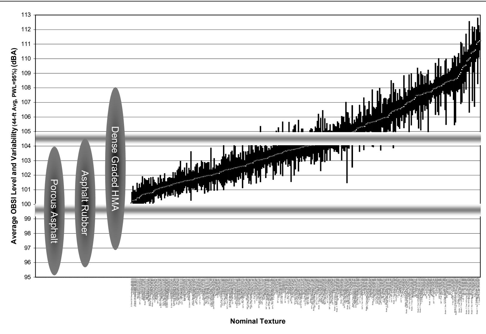
OBSI catalog of all concrete pavement textures including typical ranges of HMA alternatives [4]Functioning as both a structural pavement layer and a stormwater best management practice (BMP), pervious concrete provides hydrologic tasks of storage and infiltration while eliminating the need for separate detention or retention ponds [1]. This material offers several environmental benefits, including stormwater management by reducing runoff volume and rate, improved air quality through a high exposed surface area for photocatalytic reactions, and mitigation of the urban heat island effect by reducing heat absorption. Additionally, it improves water quality by filtering pollutants from runoff and enhances sustainability by reducing the need for separate detention facilities.
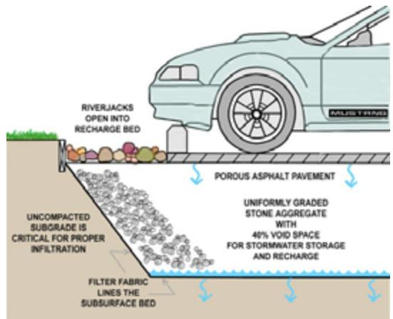
Porous pavement cross-section [1]Structural Properties
Porous concrete exhibits lower flexural strength than conventional concrete and possesses a lower modulus of elasticity, specifically 3.6 million psi at 25% voids and 1.5 million psi at 40% voids. For structural applications, subgrade design assumes saturated conditions, though standard rigid pavement design procedures apply when using conservative inputs. Dolomite is considered the optimal aggregate type for producing porous concrete, and increasing pore sizes through larger aggregate sizing serves as a direct method to increase the material’s permeability [2].
Pervious concrete serves as the structural material matrix for pervious concrete pavement, characterized by a void content typically ranging from 15% to 25% to facilitate direct water infiltration [1]. This specific porosity range allows the pavement to achieve strength values greater than 2,000 psi while maintaining high permeability rates of approximately 480 inches per hour [1]. By providing interconnected voids within this structural matrix, the material enables the effective movement and storage of stormwater required for such applications [1].
The physical properties of pervious concrete are heavily influenced by its void ratio, as compressive strength and unit weight decrease linearly with increasing void ratio, while permeability increases exponentially with void ratio (rapid above 25%).
For limestone aggregate mixtures, the modulus of elasticity exhibits a linear decrease with increased void content, dropping from approximately 3.6 million psi at 25% voids to 1.5 million psi at 40% voids [5].
At regular compaction, the split tensile strength is ≈ 12.3% of compressive strength.
In studies of four specific mixes, compressive strength ranged from 1,858–2,285 psi and permeability ranged from 340–642 in./hr; specifically, the Pure Portland cement mix had a unit weight of 117.0 lb/ft³, 2285 psi compressive strength, 340 in./hr permeability, and 31.4% porosity (flatbed scanner); the Portland cement – 15% Fly Ash mix had 119.6 lb/ft³, 2120 psi, 369 in./hr, and 28.6% porosity; the Portland cement – 15% Ground Granulated Blast-Furnace Slag mix had 115.9 lb/ft³, 1858 psi, 624 in./hr, and 24.0% porosity; and the Portland cement – 15% Limestone Powder mix had 119.4 lb/ft³, 2045 psi, 354 in./hr, and 28.3% porosity.
The slag mix exhibited the highest permeability but lowest strength due to lower unit weight, and strong correlations were found between compressive strength vs. porosity (R² = 0.98) and permeability vs. porosity (R² = 0.99) [2].
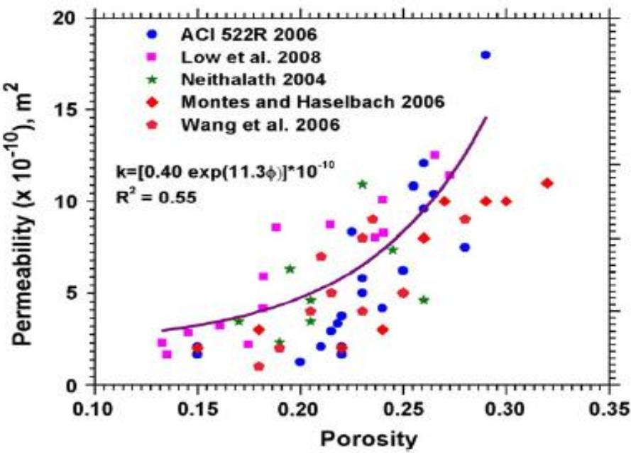
Relationship between porosity and permeability for pervious concrete mixtures [2]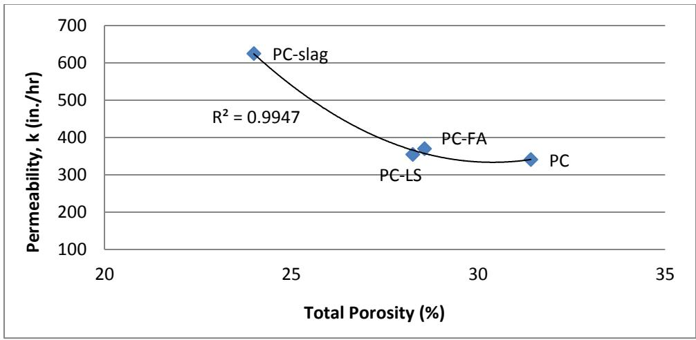
Compressive strength (b) Permeability (PC = Portland cement; FA = fly ash; LS = limestone powder) Figure 11. Effects of porosity on strength and permeability of pervious concrete [2]Hydraulic and Hydrologic Design
Regarding hydraulic properties, pervious concrete typically features a void content of 20-30%, and the pore size must allow suspended solids to pass through. An infiltration capacity of >500 in./hr (1,250 cm/hr) is recommended [5], as pervious concrete pavements with infiltration rates greater than 500 in./hr (1,250 cm/hr) tend to experience lower instances of clogging compared to those with rates below 250 in./hr (600 cm/hr) [5]. Furthermore, pervious concrete pavements with infiltration rates above 1,000 in./hr. (2,500 cm/hr) appeared to have some self-cleaning ability and were able to flush even larger amounts of soil through the surface with time [5].
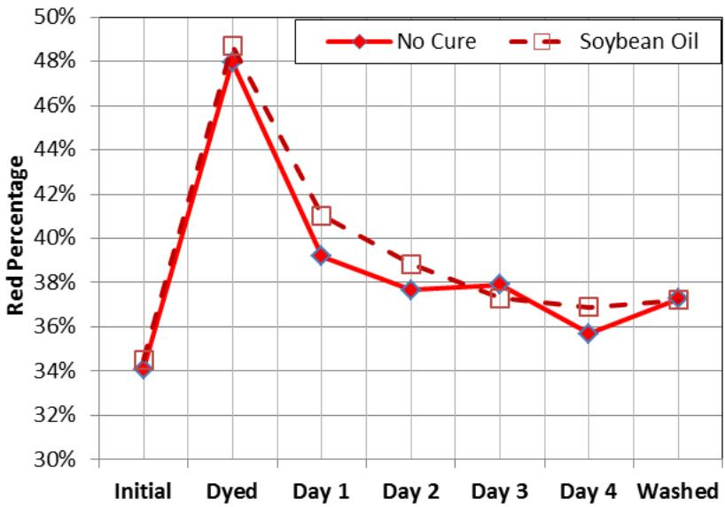
Self-cleaning ability as measured by rodamine red degredation [5]Hydrologic design for these systems is similar to traditional detention/retention areas, with designs intended to empty before 48-72 hours. There are three infiltration strategies: full infiltration (all stormwater), partial infiltration (water quality volume), and no infiltration (lined systems). Specifically, pervious concrete shoulders should be designed for either no infiltration or partial infiltration [5], and a drain tile is recommended to prevent lateral flow of water toward the mainline pavement [5].
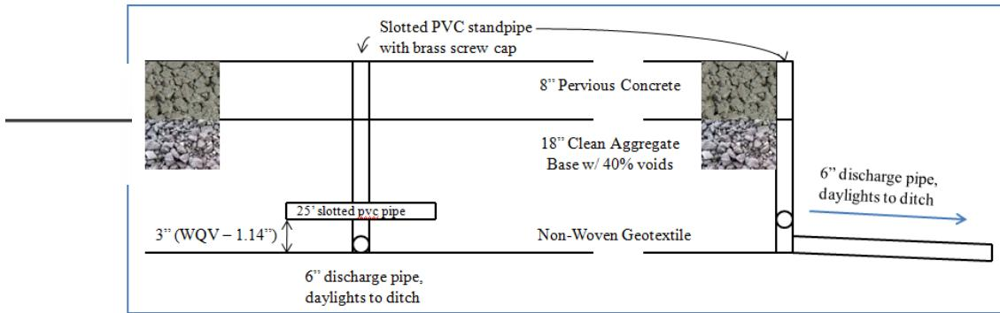
TX Active testing layout [5]Mix Design and Material Innovations
Pervious concrete mixtures typically utilize single-sized coarse aggregate ranging from one inch down to the No. 4 sieve size, with a water-to-cement ratio generally between 0.27 and 0.43 [1]. Reported engineering properties show that compressive strength decreases linearly as void ratio increases, while permeability increases exponentially, particularly for void ratios exceeding 25% [1]. To improve the bond between paste and aggregate, a modified mixing procedure may dry mix a small percentage of cement with the aggregate before adding remaining water; this increases compressive strength compared to traditional mixing methods where failure occurs at the interface [1]. Air entrainment further improves workability and durability by modifying the void structure, with the RapidAir test serving as an effective method for determining these air void characteristics [6]. For high-traffic applications requiring lower noise levels and improved functional performance, advanced mix designs may incorporate polymers, fibers, and high-quality aggregates, potentially utilizing two-lift construction or bonded thin overlays [4]. Additionally, soybean oil has been identified as a potential curing compound that can supplement or replace plastic sheeting to maintain moisture for cement hydration in high-porosity pervious concrete [6].
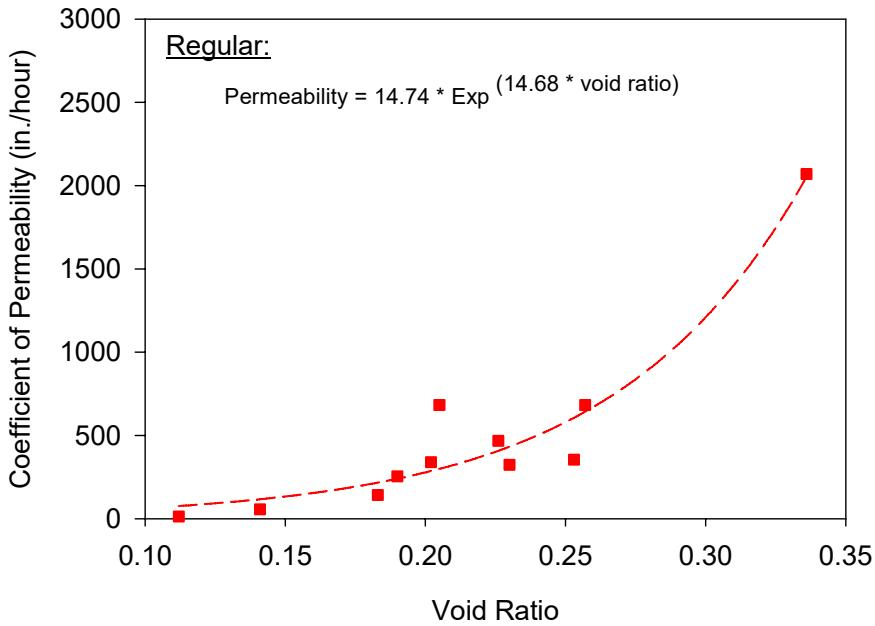
Relationship between pervious concrete void ratio and permeability for all mixes placed using regular compaction energy [1]The use of a super absorbent polymer (SAP), specifically a crushed crystalline partial sodium salt of cross-linked polypromancic acid, can be investigated to hold additional curing water in the cement paste, provide sacrificial water for evaporation, and improve hydration [5]. Compared to most other pervious concrete mixtures, mixtures utilizing SAP typically have lower cement content and higher water-to-cement ratios [5]. Due to improved lubrication from hydrated SAP gel, a one-third to one-half reduction in admixture quantities can be achieved while maintaining equivalent performance results [5]. In instances where the coarse aggregate contains a large portion of voids, a relatively high sand content of 22% by mass may be used to provide sufficient strength [5]. Furthermore, replacing up to 15% of Portland cement with supplementary cementitious materials such as fly ash, slag, or limestone powder alters workability and pollutant attenuation; specifically, mixes containing 15% fly ash or limestone removed approximately 30% of naphthalene from simulated rainfall, whereas pure cement mixes removed only 10% [2]. The specific surface area of these materials significantly impacts workability; for instance, slag’s high specific surface value (247 yd²/lb) adsorbs more mixing water than Portland cement (209 yd²/lb), reducing the workability of mixes containing 15% slag replacement [2].
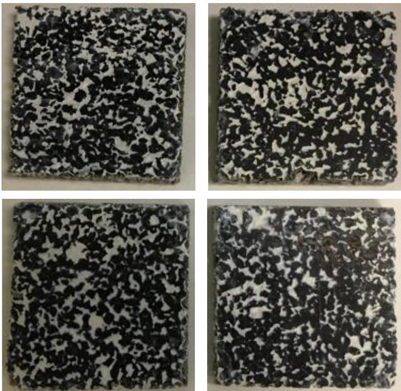
Pervious concrete specimens prepared for air void analysis: Portland cement (top left), Portland cement - 15% Fly ash (top right), Portland cement - 15% Slag (bottom left), and Portland cement - 15% Limestone (bottom right) [2]Not a proprietary product — a concrete “recipe” available from any batch plant. [7]
Portland cement pervious concrete (PCPC) mix design aims to balance three competing properties: permeability (requiring high void ratio), strength (requiring low void ratio), and freeze-thaw durability [1].
The American Concrete Institute defines pervious concrete as a near-zero slump, open-graded material with void contents ranging from 15% to 35% and compressive strengths between 400 and 4,000 psi [2].
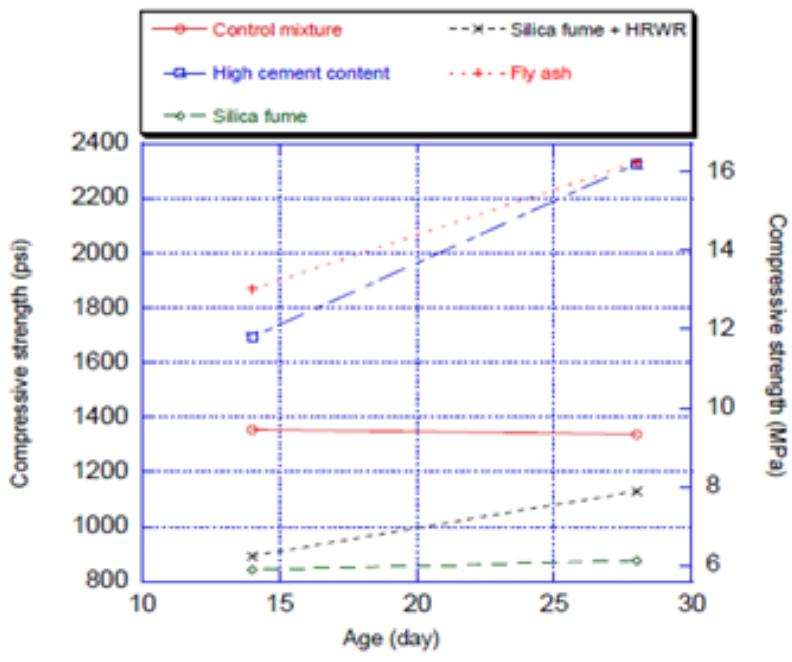
Effect of cementitious materials on compressive strengths [2]While typical mixtures utilize between 450 and 700 pounds of cementitious materials per cubic yard, representing 18% to 24% by weight of the total concrete [2], research at Iowa State University developed pervious concrete mixes optimized for cold weather climates [1].
These mixtures often utilize a gap-graded aggregate with a sand-to-total aggregate ratio of 5–10%, though adding 7% sand (by weight of coarse aggregate) increases 7-day compressive strength by 54-57% but reduces permeability by 60%.
The aggregates used are typically single-sized coarse aggregate (No. 4 to 1/2-inch), such as river gravel, crushed limestone, or pea gravel; notably, river gravel has higher abrasion resistance and unit weight than limestone, and dolomite is considered the optimal aggregate type for producing porous concrete [2].
To maintain required porosity, particle size is limited to 7 mm (0.28 in.).
Voids are created by the gap-graded mix, with porosity typically 15–20% [7], though mixes containing silica fume exhibit higher void ratios and lower strengths compared to mixes without it [1].
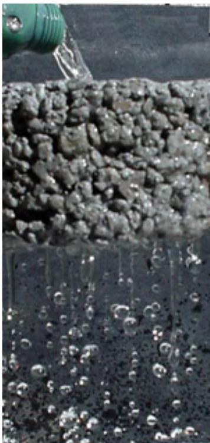
Water permeating pervious concrete [7]Cementitious materials or polymers form a film around aggregates for workability and strength, often utilizing Type I/II cement at a binder-to-aggregate ratio of 0.21 and w/c of 0.27.
For freeze-thaw strength and durability, 10–12% polymer cement may be used, such as Styrene-butadiene rubber (SBR) latex at 10% solids by weight of cementitious materials to improve strength and freeze-thaw durability.
internal curing using super absorbent polymers (SAP), which can absorb up to 2,000 times their weight in water, allows pervious concrete mixtures to be cured without plastic sheeting while maintaining hydration [5].
The workability of fresh pervious concrete mixtures containing fly ash or limestone powder replacement was observed to be superior to those incorporating slag [2].
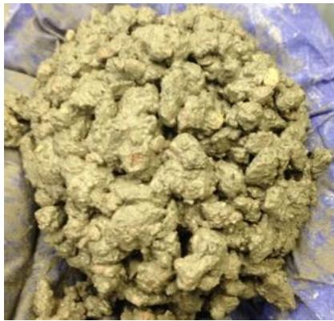
Workability test results of pervious concrete mixtures: Portland cement (top left), Portland cement - 15% Fly ash (top right), Portland cement - 15% Slag (bottom left), and Portland cement - 15% Limestone (bottom right) [2]Testing and Evaluation Methods
X-ray computed tomography (CT) scanning is used to nondestructively evaluate the three-dimensional void structure and continuity within pervious concrete, which is critical for assessing permeability and durability characteristics [1]. To assist in mixture design, gyratory compaction testing has been developed to quantify the workability and compactibility of pervious concrete, providing consistent specimens since traditional slump tests are ineffective [6].
 Relationship between voids and unit weight of pervious concrete samples made with gyratory compaction [6]
Relationship between voids and unit weight of pervious concrete samples made with gyratory compaction [6]
The ASTM C1701 test is used for measuring the infiltration rate of in-place pervious concrete to assess pavement capacity over time [5], and this testing has allowed actual testing of pavement capacity over time [5]. Additionally, laboratory column testing using rainfall simulators can quantify pollutant attenuation by applying simulated rainwater containing contaminants like naphthalene at concentrations of 30 mg/L, which exceeds the recommended water quality criterion of 0.5 mg/L [2].
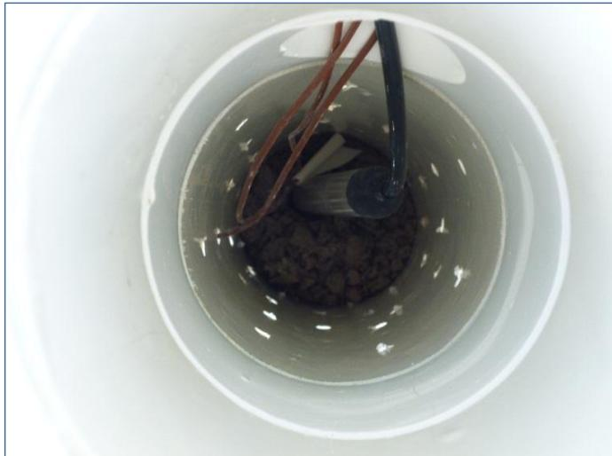
Perforated stand pipe within aggregate base showing pressure sensor and thermocouple wires [5]Cold Weather Durability
In cold weather climates, pervious concrete can be engineered for freeze-thaw durability by incorporating sand or latex admixtures; specifically, a mix containing sand and air entrainment demonstrated only 2% mass loss after 300 freeze-thaw cycles [1]. While the addition of sand or latex increases compressive strength, it reduces permeability compared to baseline mixes without these additives [1]. Although initial experiences with pervious concrete pavement in Belgium showed poor durability in freezing weather, these mixtures have since been made more durable by adding polymers and other cement contents [3].
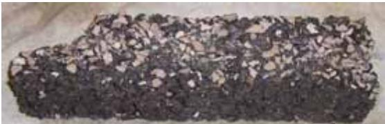
Freeze-thaw beam showing failure of 3/8-LS-S7 after 110 cycles [1]To accommodate hydrologic requirements and balance the lower modulus of the surface concrete, aggregate base depths for pervious concrete in cold climates are typically 12 to 18 inches (300-450 mm) or more [5]. In these cold climates, the aggregate base depth can normally be 12 to 18 inches (300-450 mm) or more [5].
Maintenance and Clogging Management
Clogging is the primary concern [5], and therefore design should minimize clogging risk [5]. While regular maintenance may be required [5], a high initial infiltration capacity provides margin against clogging [5].
Case Study: Highway 141 Shoulder Application
In the technology demonstrations project, pervious concrete was used for highway shoulders, marking the first use of pervious concrete for stormwater management on a highway. The mixture proportions consisted of 510 pcy TX Active cement, 2030 pcy coarse aggregate, 360 pcy fine aggregate, and 200 pcy water (w/c = 0.35 + 0.05 internal curing), resulting in design voids of 24% and a design unit weight of 114.75 pcf. This project featured the first use of an internal curing agent (super absorbent polymer) to eliminate plastic curing, which reduces cement content and admixture requirements while providing cost savings from eliminating plastic materials and labor.
The design features included an 8” pervious concrete layer situated over an 18” clean aggregate base with 40% voids. To ensure proper functionality, the system incorporated a geotextile separation layer and a drain tile to prevent lateral water movement.
See also
References
- V. R. Schaefer, K. Wang, M. T. Suleiman, and J. T. Kevern, "Mix Design Development for Pervious Concrete in Cold Weather Climates," CTRE, Iowa State University, Ames, IA, 2006. [Online]. Available: https://www.perviouspavement.org/downloads/Iowa.pdf
- S. K. Ong, K. Wang, Y. Ling, and G. Shi, "Pervious Concrete Physical Characteristics and Effectiveness in Stormwater Pollution Reduction," Institute for Transportation, Ames, IA, Rep. DTRT13-G-UTC37, 2016. [Online]. Available: https://www.intrans.iastate.edu/wp-content/uploads/2018/03/pervious_concrete_in_stormwater_pollution_reduction_w_cvr.pdf
- D. Harrington, R. Rasmussen, D. Merritt, T. Cackler, and P. Taylor, "Long-Term Plan for Concrete Pavement Research and Technology—The Concrete Pavement Road Map (Second Generation): Volume II, Tracks (FHWA-HRT-11-070)," National Center for Concrete Pavement Technology, Iowa State University, Ames, IA, 2012. [Online]. Available: https://www.fhwa.dot.gov/publications/research/infrastructure/pavements/pccp/11070/11070.pdf
- T. Ferragut, R. O. Rasmussen, P. Wiegand, E. Mun, and E. T. Cackler, "ISU-FHWA-ACPA Concrete Pavement Surface Characteristics Program Part 2: Preliminary Field Data Collection," National Concrete Pavement Technology Center, Ames, IA, 2007. [Online]. Available: https://www.intrans.iastate.edu/research/completed/concrete-pavement-surface-characteristics-proj-15-part-2/
- T. Cackler, J. Alleman, J. Kevern, and J. Sikkema, "Technology Demonstrations Project: Environmental Impact Benefits with "TX Active" Concrete Pavement (Missouri DOT Two-Lift Demonstration)," National Concrete Pavement Technology Center, Ames, IA, 2012. [Online]. Available: https://www.cptechcenter.org/research/completed/technology-demonstrations-project-environmental-impact-benefits-with-tx-active-concrete-pavement-in-missouri-dot-two-lift-highway-construction-demonstration/
- V. R. Schaefer and J. T. Kevern, "An Integrated Study of Pervious Concrete Mixture Design for Wearing Course Applications," National Concrete Pavement Technology Center, Ames, IA, 2011. [Online]. Available: https://www.intrans.iastate.edu/wp-content/uploads/2018/03/pervious_overlay_report_w_cvr.pdf
- E. T. Cackler, T. Ferragut, and D. S. Harrington, "Evaluation of U.S. and European Concrete Pavement Noise Reduction Methods," National Concrete Pavement Technology Center, Iowa State University, Ames, IA, Rep. FHWA Project 15 (DTFH61-01-X-00042), 2006. [Online]. Available: https://www.cptechcenter.org/wp-content/uploads/2018/03/surface_characteristics_i.pdf
Feedback on this page